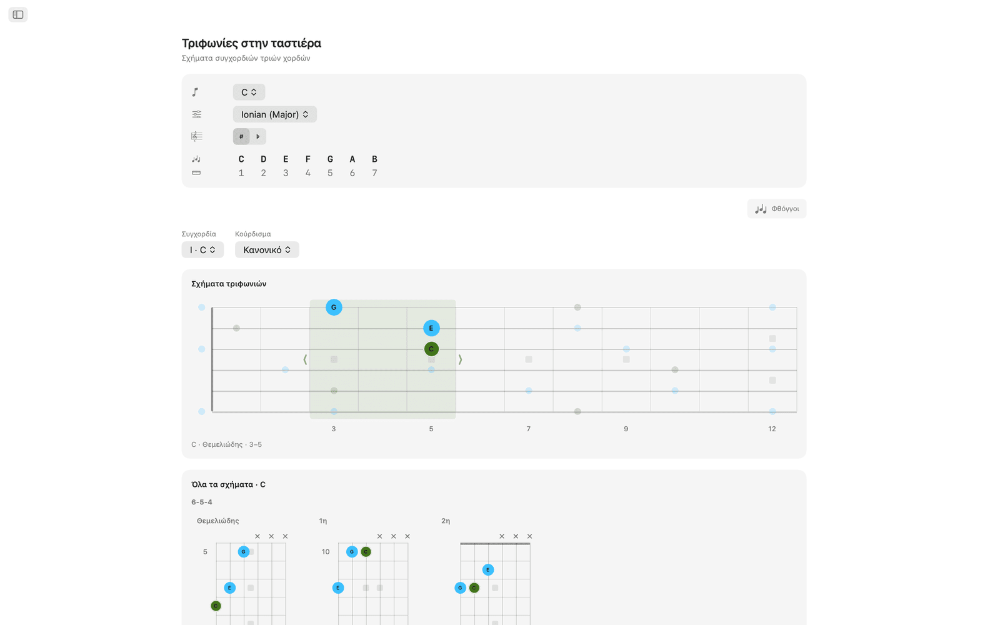
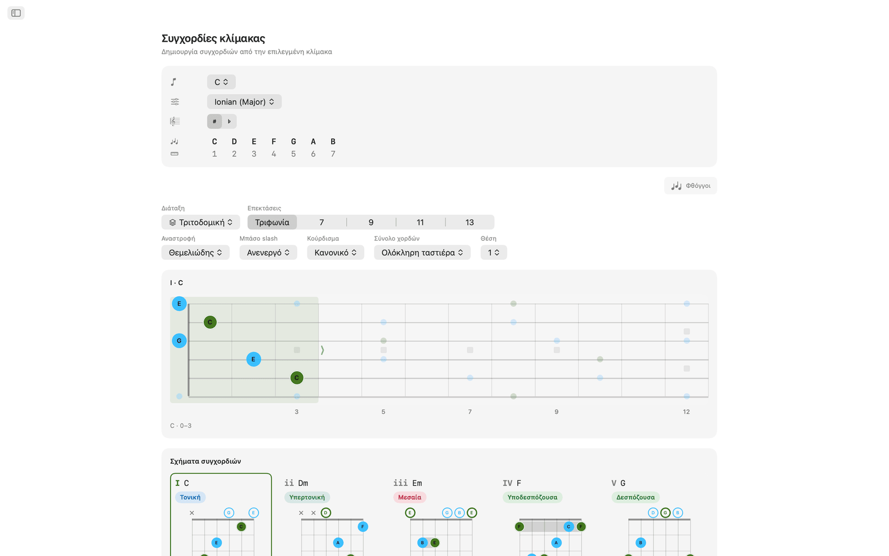
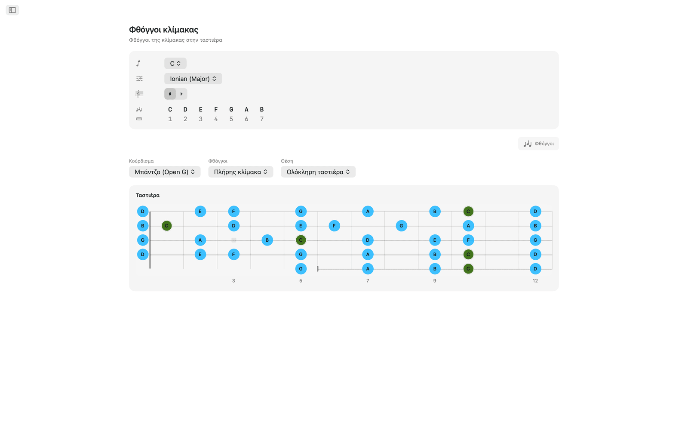
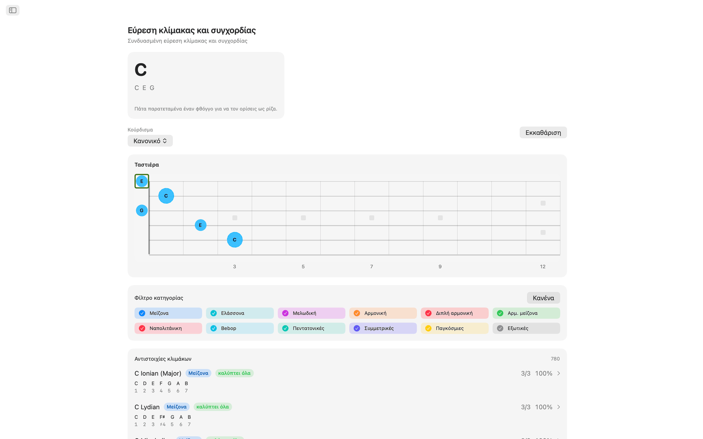
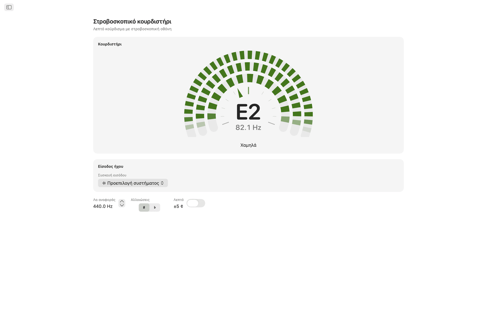
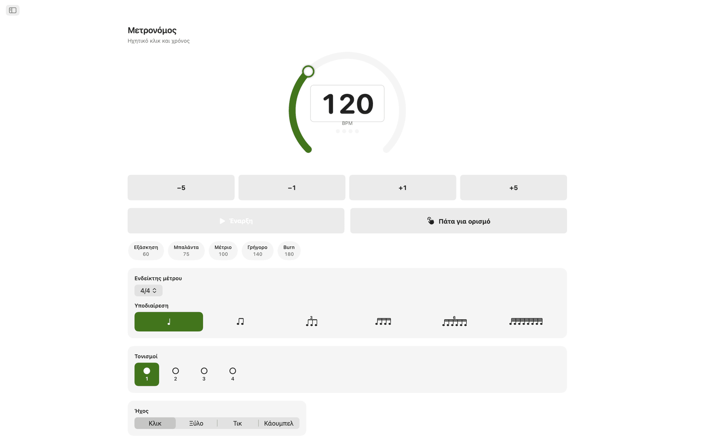
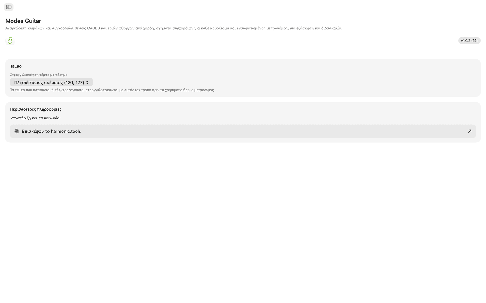

Modes Guitar για macOS
Το Modes Guitar είναι εφαρμογή ταστιέρας για το Mac. Πάτα τους φθόγγους που πιάνεις για να δεις τι παίζεις, απλώσε οποιαδήποτε κλίμακα σε θέσεις CAGED ή τριών φθόγγων ανά χορδή, περιηγήσου σε σχήματα συγχορδιών που παίζονται σε οποιοδήποτε κούρδισμα και εξασκήσου με ενσωματωμένο μετρονόμο. Είναι εφαρμογή με πλευρική στήλη, οπότε στέκεται δίπλα στο DAW ή στο πλάνο μαθημάτων σου.
- Εύρεση κλίμακας και συγχορδίας κατευθείαν στην ταστιέρα
- Θέσεις CAGED και τριών φθόγγων ανά χορδή
- Συγχορδίες που παίζονται σε οποιοδήποτε κούρδισμα
- 20 κουρδίσματα και δικό σου κούρδισμα
- Στροβοσκοπικό κουρδιστήρι με επιλογή διεπαφής ήχου και καναλιού
- Μετρονόμος εξάσκησης και γραφικά στοιχεία του Κέντρου ειδοποιήσεων
Στιγμιότυπα
Περιλαμβάνονται φωτεινά και σκούρα στιγμιότυπα που ακολουθούν το θέμα του ιστότοπου.









Χαρακτηριστικά
- Πάτα στην ταστιέρα τους φθόγγους που κρατάς και το Modes Guitar ονομάζει τη συγχορδία σε πραγματικό χρόνο (μείζονα, ελάσσονα, ελαττωμένη, αυξημένη, εκτεταμένη, sus και άλλες) και κατατάσσει κάθε κλίμακα που ταιριάζει με βάση την κάλυψη φθόγγων. Φιλτράρισε ανά οικογένεια κλίμακας για να στενέψεις τη λίστα και πήγαινε απευθείας στις συγχορδίες της.
- Διάλεξε θεμελιώδη φθόγγο και κλίμακα και κάθε φθόγγος της φωτίζεται στην ταστιέρα. Άλλαξε σε θέσεις CAGED ή σε διαδρομές τριών φθόγγων ανά χορδή, σύρε ένα πλαίσιο πάνω και κάτω για να αλλάξεις θέση και περιόρισε τους φθόγγους στην τριφωνία, τη συγχορδία 7ης, την πεντατονική ή ολόκληρη την κλίμακα.
- Κάθε βαθμίδα της κλίμακας παίρνει σχήματα συγχορδιών που παίζονται, με ενδείξεις ανοιχτών και σε σίγαση χορδών, ενδείξεις μπαρέ και αριθμό τάστου όταν το σχήμα βρίσκεται ψηλά στην ταστιέρα. Πέρασε από θέση σε θέση, επίλεξε αναστροφή ή βάλε οποιονδήποτε φθόγγο της κλίμακας στο μπάσο για συγχορδίες slash.
- Οποιαδήποτε συγχορδία της τονικότητας μπορεί να διαλυθεί και να ξαναχτιστεί στην ταστιέρα. Κάθε κλειστή διάταξη εμφανίζεται ως πλέγμα διαγραμμάτων, ομαδοποιημένο ανά σύνολο χορδών, σε θεμελιώδη θέση, πρώτη αναστροφή και δεύτερη αναστροφή. Επίλεξε μία και εμφανίζεται στην ταστιέρα με τους υπόλοιπους φθόγγους της συγχορδίας γύρω της, και μπορείς να σύρεις το σχήμα στην ταστιέρα για να παίξεις το ίδιο δάχτυλωμα σε κάθε θέση.
- Υπάρχουν 20 κουρδίσματα: Κανονικό, Drop D, Drop C, E♭ Standard, DADGAD, Open G, Open D, 7 χορδών, βαρύτονο, μπάσο 4 και 5 χορδών, ουκουλέλε, μπάντζο (πεντάχορδο, τενόρο και plectrum) και μαντολίνο. Σχήματα, συγχορδίες και ονόματα φθόγγων υπολογίζονται ξανά για το κούρδισμα που διαλέγεις και το δάχτυλωμα μένει ίδιο όταν το αλλάζεις, για να ακούσεις τι γίνεται το ίδιο σχήμα. Για δικό σου κούρδισμα, διάλεξε 3 έως 8 χορδές και κούρδισε κάθε μία με το αυτί, ξεκινώντας από οποιαδήποτε προρύθμιση.
- Το κουρδιστήρι είναι στροβοσκοπικό. Παίξε μια χορδή και τρεις δακτύλιοι από τμήματα κινούνται προς τη μία κατεύθυνση όταν είσαι χαμηλά και προς την άλλη όταν είσαι ψηλά, και σταματούν μόλις πετύχεις το σωστό ύψος, κάτι που δείχνει πολύ πιο λεπτές διαφορές από μια βελόνα. Είναι πλήρως χρωματικό: ονομάζει ό,τι παίζεις, ανοιχτή χορδή ή πατημένο φθόγγο, σε οποιοδήποτε κούρδισμα, και κιθάρα, μπάσο, ουκουλέλε, μπάντζο ή μαντολίνο κουρδίζονται από το ίδιο καντράν. Μπορείς να ρυθμίσεις το Λα αναφοράς από 415 έως 466 Hz, να ενεργοποιήσεις τη Λεπτή κλίμακα για ένδειξη με ακρίβεια ενός δεκάτου του σεντ και να δείχνεις τις αλλοιώσεις με διέσεις ή υφέσεις. Στο Mac επιλέγεις επίσης σε ποια διεπαφή ήχου και σε ποιο κανάλι εισόδου ακούει, ώστε μια κιθάρα συνδεδεμένη σε διεπαφή να κουρδίζεται κατευθείαν από την υποδοχή. Όλα αναλύονται στη συσκευή και τίποτα δεν ηχογραφείται.
- Ο μετρονόμος εξάσκησης έχει ενδείκτες μέτρου, υποδιαιρέσεις, swing, τονισμούς ανά χρόνο, τέσσερις ήχους κλικ, ρυθμιζόμενη ένταση και απτική ανάδραση, καθώς και γρήγορα τέμπο και αποθηκευμένες προρυθμίσεις για τα περάσματα που μελετάς.
- Κράτα τον μετρονόμο στο Κέντρο ειδοποιήσεων και ξεκίνα ή σταμάτα τον χωρίς να αλλάξεις εφαρμογή. Υπάρχει επίσης μια Κλίμακα της ημέρας και μια Συγχορδία της ημέρας για εξάσκηση.
Στο Mac
- Λειτουργεί εξ ολοκλήρου στη συσκευή: χωρίς λογαριασμό, διαφημίσεις ή παρακολούθηση
- Δεν απαιτείται σύνδεση στο διαδίκτυο
- Φωτεινή και σκούρα εμφάνιση παντού
- Εφαρμογή με πλευρική στήλη που στέκεται δίπλα στο DAW ή στο πλάνο μαθημάτων σου
- Διατίθεται σε 22 γλώσσες
Προσβασιμότητα
Λειτουργεί με VoiceOver και Φωνητικό έλεγχο και μπορεί να χρησιμοποιηθεί από το πληκτρολόγιο, με τα πλήκτρα βέλους και το πλήκτρο διαστήματος.
Το Modes Guitar είναι δωρεάν για 7 ημέρες. Μετά τη δοκιμή, η πλήρης πρόσβαση είναι εφάπαξ αγορά, χωρίς συνδρομή.
Αναφορά ταστιέρας και κουρδισμάτων
Αναφορά για τα κουρδίσματα, τις θέσεις, τα εργαλεία συγχορδιών, το κουρδιστήρι και τον μετρονόμο της εφαρμογής.
Κουρδίσματα
Σχήματα, συγχορδίες και ονόματα φθόγγων υπολογίζονται ξανά για το κούρδισμα που διαλέγεις. Όταν αλλάζεις κούρδισμα, το δάχτυλωμα μένει ίδιο, για να ακούσεις τι γίνεται το ίδιο σχήμα. Οι φθόγγοι αναγράφονται από τη χαμηλότερη χορδή προς την ψηλότερη.
| Κούρδισμα | Φθόγγοι (χαμηλά → ψηλά) | Χορδές |
|---|---|---|
| Κανονικό | E A D G B E | 6 |
| Drop D | D A D G B E | 6 |
| Drop C | C G C F A D | 6 |
| E♭ Standard | E♭ A♭ D♭ G♭ B♭ E♭ | 6 |
| DADGAD | D A D G A D | 6 |
| Open G | D G D G B D | 6 |
| Open D | D A D F♯ A D | 6 |
| 7 χορδών | B E A D G B E | 7 |
| Βαρύτονο | B E A D F♯ B | 6 |
| Μπάσο (4 χορδών) | E A D G | 4 |
| Μπάσο (5 χορδών) | B E A D G | 5 |
| Ουκουλέλε | G C E A | 4 |
| Μπάντζο (Open G) | G D G B D | 5 |
| Μπάντζο (Double C) | G C G C D | 5 |
| Μπάντζο (Sawmill) | G D G C D | 5 |
| Μπάντζο (Open D) | F♯ D F♯ A D | 5 |
| Μπάντζο (τενόρο) | C G D A | 4 |
| Μπάντζο (ιρλανδικό τενόρο) | G D A E | 4 |
| Μπάντζο (plectrum) | C G B D | 4 |
| Μαντολίνο | G D A E | 4 |
Μπορείς να φτιάξεις και δικό σου κούρδισμα: διάλεξε 3 έως 8 χορδές και κούρδισε κάθε μία με το αυτί, ξεκινώντας από οποιαδήποτε προρύθμιση.
Θέσεις στην ταστιέρα
Απλώσε οποιαδήποτε κλίμακα στην ταστιέρα και άλλαξε πόσο από αυτήν βλέπεις. Σύρε ένα πλαίσιο πάνω και κάτω για να αλλάξεις θέση.
Συστήματα θέσεων
Υποσύνολα φθόγγων
Σχήματα συγχορδιών
Κάθε βαθμίδα της κλίμακας παίρνει σχήματα που παίζονται στο τρέχον κούρδισμα.
- Τα σχήματα που παίζονται έχουν ενδείξεις ανοιχτών και σε σίγαση χορδών, ενδείξεις μπαρέ και αριθμό τάστου όταν το σχήμα βρίσκεται ψηλά στην ταστιέρα.
- Μπορείς να περάσεις από σχήμα σε σχήμα κατά μήκος της ταστιέρας.
- Οι αναστροφές σου επιτρέπουν να διαλέξεις ποιος φθόγγος της συγχορδίας θα είναι στο μπάσο.
- Για συγχορδίες slash, βάλε οποιονδήποτε φθόγγο της κλίμακας στο μπάσο.
Τριφωνίες στην ταστιέρα
Διάλυσε οποιαδήποτε συγχορδία της τονικότητας και ξαναχτίσε την στην ταστιέρα.
Στροβοσκοπικό κουρδιστήρι
Στροβοσκοπικό κουρδιστήρι για κάθε όργανο σε κάθε κούρδισμα. Αναλύεται στη συσκευή και δεν ηχογραφείται ποτέ.
Μετρονόμος εξάσκησης
Ένας πλήρης μετρονόμος για τα περάσματα που μελετάς.
Γραφικά στοιχεία
Πήγαινε στον μετρονόμο, στην Κλίμακα της ημέρας και στη Συγχορδία της ημέρας χωρίς να αλλάξεις εφαρμογή.